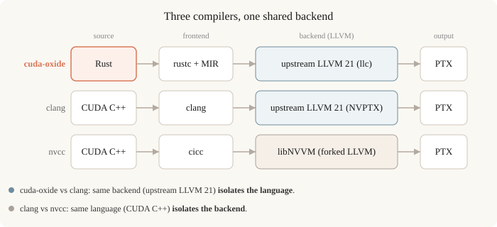
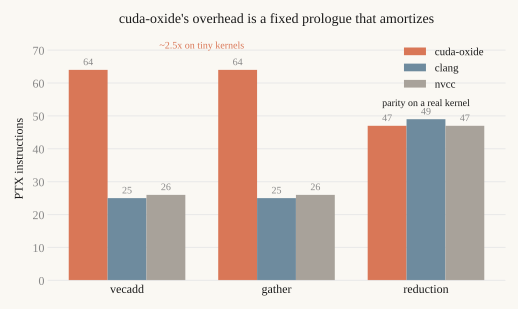
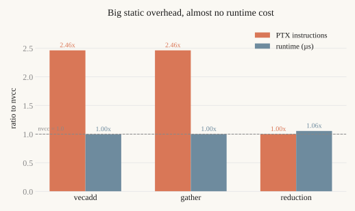

NVlabs released cuda-oxide in May 2026: a rustc codegen backend that compiles ordinary Rust — slices, Option, the borrow checker — down to PTX, so you can write GPU kernels in safe Rust instead of CUDA C++. The obvious question for anyone deciding whether to bet on it is: what does that safety cost in the code that actually runs?
The expected answer is "some overhead, because a young frontend can't match nvcc yet." That's correct, but it's not the interesting part. The interesting part is the shape of the overhead — where it comes from, whether it scales with the kernel, and what it costs once the code runs on the hardware. This post measures all of that on three small kernels, first at the level of the emitted PTX and SASS, then with a runtime benchmark on an L4. It is not a survey of Rust GPU ecosystems (Rust-CUDA, Triton, and the like) — only a close look at what cuda-oxide's own compiler emits.
The story has two threads. The first is about overhead, and it has a satisfying ending. cuda-oxide's overhead is fixed: a constant prologue, nearly identical across kernels, dominated by generic-address-space memory access rather than per-element work. On a trivial kernel that prologue is 2.5× the instruction count of CUDA C++. But because it's a fixed cost, it amortizes — on a real kernel with shared memory and a loop, cuda-oxide reaches PTX parity with nvcc. And when I actually time the kernels, the overhead turns out to be mostly free: on memory-bound kernels it is completely hidden, and only on a compute-bound kernel does it cost a few percent.
The second thread pins down where cuda-oxide's safety actually lives, in the emitted code. The project describes itself, carefully, as "safe(ish)": its DisjointSlice type makes parallel writes race-free and bounds-checked, while on the device, bounds checks on plain indexing are elided by design. The PTX lets me confirm that and draw the exact line — checked writes through DisjointSlice, unchecked reads through plain &[T] indexing — and show what an out-of-bounds read does in practice. This is not a hidden flaw; it is the documented model, made precise at the level of the code that runs.
The short version
If you read nothing else:
- On tiny kernels, cuda-oxide emits ~2.5× the PTX of CUDA C++ — but it is a fixed prologue, not per-element work.
- Because it is fixed, it amortizes: on a real kernel (the reduction) cuda-oxide reaches PTX parity with nvcc.
- At runtime the overhead is mostly free — the three compilers are identical on the two memory-bound kernels, and cuda-oxide is a few percent slower on the one compute-bound kernel.
- The overhead comes from generic (not global) address-space loads — a fixable codegen gap, not algorithmic cost.
- cuda-oxide's safety guarantee covers race-free writes; on the device, plain
&[T]reads are not bounds-checked. That is its documented model, confirmed here at the PTX level.
Why three compilers, not two
The naive experiment is "compile a kernel with cuda-oxide and with nvcc, diff the PTX." Don't do this. cuda-oxide lowers Rust to LLVM IR and hands it to upstream llc (LLVM 21); nvcc lowers CUDA C++ through libNVVM, which is a forked LLVM. A two-way diff conflates two different things — the language frontend and the LLVM backend — and you'd end up blaming Rust for differences that are really libNVVM's.
The fix is a third toolchain. I compile the same kernel three ways:
| Toolchain | Source | Frontend | Backend | IR dumpable |
|---|---|---|---|---|
| cuda-oxide | Rust | rustc + Stable MIR | llc, upstream LLVM 21 |
yes (.ll) |
| clang | CUDA | clang | upstream LLVM 21 (NVPTX) | yes (.ll) |
| nvcc | CUDA | cicc | libNVVM (forked) | no |
cuda-oxide and clang share the same upstream LLVM 21 backend (I pinned clang-21 to match cuda-oxide's llc-21), so comparing them isolates the language. clang vs nvcc holds the language fixed and isolates the backend, as a baseline I can subtract out. The cuda-oxide-vs-clang pair is the one that actually answers "what does Rust cost."

The three compile paths. cuda-oxide and clang share the upstream LLVM 21 backend, so comparing them isolates the language; clang and nvcc share the language but differ in the backend.
I diff at two levels. cuda-oxide writes textual LLVM IR before invoking llc, and clang emits IR with -emit-llvm, so I can compare the IR before the shared backend runs — that's where Rust-specific artifacts (panic paths, address-space handling) live. Then I compare the final PTX and SASS. nvcc's NVVM IR isn't dumpable, so the IR-level diff is cuda-oxide vs clang only; PTX/SASS is all three.
One methodological detail matters more than it looks. PTX is a virtual ISA; the real register allocation happens in ptxas. To keep the comparison honest I run a single ptxas binary over all three PTX files — so any register or SASS difference reflects the PTX, not a difference in ptxas versions. Everything targets sm_89 (an L4), -O3, fast-math off.
Calibration
Before trusting any of this, the trivial kernel has to behave. For vecadd, all three toolchains allocate the same 12 registers with zero spills, and clang and nvcc come out nearly identical. The two C++ paths agreeing on the simplest kernel is what licenses treating divergence on anything harder as real signal, not a harness artifact. With that established:
vecadd: c[i] = a[i] + b[i]
The Rust version uses cuda-oxide's safe pattern — a DisjointSlice<f32> for the output (race-free by construction) and &[f32] for the inputs:
#[kernel]
pub fn vecadd(a: &[f32], b: &[f32], mut c: DisjointSlice<f32>) {
let idx = thread::index_1d();
let i = idx.get();
if let Some(c_elem) = c.get_mut(idx) {
*c_elem = a[i] + b[i];
}
}
The CUDA C++ is the obvious one-thread-per-element kernel with an if (i < n) guard. Here's the static comparison:
| metric | oxide | clang | nvcc |
|---|---|---|---|
| ptxas registers | 12 | 12 | 12 |
| ptxas spills | 0 | 0 | 0 |
| ptxas stack frame (B) | 8 | 0 | 0 |
| PTX instructions | 64 | 25 | 26 |
| PTX branches | 8 | 1 | 1 |
PTX setp |
5 | 1 | 1 |
PTX cvt |
4 | 0 | 0 |
| global loads | 0 | 2 | 2 |
| generic loads | 2 | 0 | 0 |
| LLVM IR basic blocks | 20 | 2 | — |
| SASS instructions | 56 | 32 | 32 |
Same register pressure, no spills — so the cost is not register allocation. But cuda-oxide emits ~2.5x the PTX instructions and ~1.75x the SASS, with an 8-byte stack frame the C++ paths don't have, far more control flow (8 branches vs 1), and — the tell — zero global loads. Its loads and stores go through the generic address space (ld.b32, no .global qualifier) where the C++ paths use ld.global. The four cvt instructions and the extra branches are the address-space machinery: cuda-oxide doesn't prove to LLVM that the slice's backing pointer lives in global memory, so it emits generic accesses that resolve the space at runtime.
gather: out[i] = src[indices[i]]
The second kernel adds a data-dependent index — src is read at a position that isn't known at compile time, so the bounds can't be proven statically. My hypothesis going in: this is where Rust's safe indexing should cost the most, because a bounds check on src[j] can't be elided.
It didn't happen. gather's cuda-oxide profile is almost identical to vecadd's:
| metric | oxide (vecadd) | oxide (gather) |
|---|---|---|
| PTX instructions | 64 | 64 |
| PTX branches | 8 | 8 |
PTX setp |
5 | 5 |
| generic loads | 2 | 2 |
| LLVM basic blocks | 20 | 20 |
| panic / trap refs | 0 / 0 | 0 / 0 |
Meanwhile clang and nvcc do adapt to the new kernel (different multiply/add counts, 24 SASS instructions vs 32). So the C++ paths track the kernel logic, but cuda-oxide's overhead barely moves.
That points at the real structure of the cost: it's a fixed prologue, not per-element work. The 8 branches, 5 setp, 20 basic blocks, and the generic-address machinery are essentially constant — thread-index computation, the DisjointSlice write check, and address-space resolution — and they dominate both of these small kernels regardless of what the kernel actually does. The kernel-specific arithmetic is a rounding error on top.
And the thing a Rust programmer might expect — a bounds check on the data-dependent src[indices[i]] — isn't there. panic_refs and trap_refs are zero in both kernels. That absence is not an accident; it is what cuda-oxide documents about itself, which the next section makes precise.
Where the safety boundary sits: checked writes, unchecked reads
cuda-oxide describes itself, deliberately, as "safe(ish)," and its safety model is precise about what that means. The guarantee is about parallel writes: the DisjointSlice + ThreadIndex types make one-thread-one-element writes race-free, and get_mut is bounds-checked — it returns Option, with None for an out-of-range index. Reads are a different story, and the docs say so. For shared memory they state that on the device the bounds check is elided and an out-of-bounds index is undefined behavior; and their own GEMM example keeps a manual row < m guard precisely to avoid reading past the inputs. So the model is already documented. What the PTX adds is confirmation at the level of the code, and the exact line drawn for plain &[T] reads.
The static evidence shows it directly: across both kernels, panic_refs and trap_refs are zero. There is no bounds-check branch and no panic path anywhere in the emitted PTX for a plain &[T] read. To see what that means at runtime, I ran the gather kernel with every index pointing past the end of src:
let idx_host: Vec<u32> = (0..N).map(|i| (i + N) as u32).collect(); // all OOB
On the CPU, src[j] with j >= src.len() is a guaranteed panic. On the L4, the kernel launched, did not trap, and returned values (here 0.0, from zeroed neighboring memory). No fault, no panic, no error on copy-back — exactly the elided-check behavior the docs describe, now visible end to end.
So the boundary, stated precisely: checked, race-free writes through DisjointSlice; unchecked reads through plain &[T] indexing. This is a defensible design — bounds-checking every device read would cost throughput, and DisjointSlice/ThreadIndex is clearly meant to be the safety line — and, to be clear, it is what the project documents, not something this post uncovered. The reason it is still worth stating plainly is that "write your GPU kernels in safe Rust" can read, to a Rust programmer, as a promise that includes reads. It does not. On the device, treat input bounds as your responsibility, the same as in CUDA C++ — which is also what the docs advise.
reduction: where the overhead amortizes
Back to the overhead. On two trivial kernels it was a fixed prologue, 2.5× the C++ instruction count. But a fixed cost has an obvious implication: on a kernel that does real work, it should shrink to a small fraction. The third kernel tests that — a block-wise sum reduction, with shared memory, a __syncthreads() barrier, and a tree-reduction loop. This is the first kernel in the suite that has substantial structure of its own.
The prologue amortizes, and the result is striking:
| metric | oxide | clang | nvcc |
|---|---|---|---|
| PTX instructions | 47 | 49 | 47 |
| ptxas registers | 10 | 11 | 10 |
| ptxas stack frame (B) | 0 | 0 | 0 |
| shared memory (B) | 1024 | 1024 | 1024 |
| ld.shared / st.shared | 3 / 2 | 3 / 2 | 3 / 2 |
| barriers | 2 | 2 | 2 |
| SASS instructions | 56 | 48 | 48 |
On a real kernel, cuda-oxide reaches PTX parity — 47 instructions to clang's 49, with fewer registers, no stack frame, and identical shared-memory use. The 2.5× gap from the trivial kernels is gone, because the fixed prologue is now a small share of a kernel that actually does something. So the overhead from the earlier sections is best read as a constant, not a multiplier: it dominates tiny memory-bound kernels and disappears into real ones.

PTX instruction count per kernel. cuda-oxide is ~2.5x on the tiny kernels but reaches parity with nvcc on the reduction, where the kernel's own work dominates the fixed prologue.
Two honest qualifications. First — and this is the one that matters for the claim — the amortization does not depend on dropping safety. The prologue is the same fixed size it was on vecadd; it shrinks only relative to the kernel, because the reduction's own work (the loop, the shared-memory tree, the barrier) now dominates the instruction count. That is the general result. Separately, this particular kernel also happens to skip the per-element write check, because it uses cuda-oxide's unchecked operations — shared-memory indexing, and get_unchecked_mut for the block-indexed write, rather than the checked DisjointSlice path. So the skipped check is a bonus specific to this kernel, not the cause of the parity. Second, parity is a PTX-level result; in SASS, cuda-oxide is still ~17% heavier (56 vs 48), because the residual generic addressing survives into machine code even when the instruction count matches. Which raises the question this whole static exercise has been circling: does any of it actually cost speed?
What does the overhead cost?
Instruction counts are a proxy, not a measurement. A kernel with 2.5× the PTX can run at exactly the same speed, because GPU performance is usually limited by memory bandwidth or occupancy, not by how many instructions the kernel issues. So I benchmarked all three compilers, on the same L4, with the same data and launch config.
The fair way to do this is one launcher and three compiled kernels. The harness rebuilds each toolchain's cubin from its committed PTX with the same ptxas used for the static study, loads all three through the CUDA driver API, and times each with CUDA events (many warmup launches, then a measured loop, median reported). Only the compiled code differs — the runtime analogue of the single-ptxas rule. Each result is checked against a host reference. Here are the per-launch medians at 16.7M elements:
| kernel | oxide (µs) | clang (µs) | nvcc (µs) | limited by |
|---|---|---|---|---|
| vecadd | 805 | 807 | 808 | memory bandwidth (83% of peak) |
| gather | 5693 | 5693 | 5694 | memory latency (scattered reads) |
| reduction | 324 | 310 | 307 | shared-memory pipeline |
On the two memory-bound kernels, the three compilers are identical — within 0.3% on vecadd, within 0.01% on gather. vecadd runs at 83% of the L4's peak bandwidth; gather is limited by the latency of its scattered reads. In both cases the kernel spends its time waiting on memory, and the GPU has plenty of idle cycles to absorb cuda-oxide's extra instructions. So the 2.5× static overhead costs, in wall-clock terms, nothing.

cuda-oxide relative to nvcc. The 2.46x static PTX overhead on vecadd and gather costs essentially nothing at runtime; the only measurable cost is the reduction's few percent, where the PTX is already at parity.
The reduction is the one case where the overhead is not fully hidden. cuda-oxide is the slowest and nvcc the fastest, by a few percent. This is the kernel with real compute — a shared-memory tree reduction — so it isn't purely bandwidth-bound (a profile puts it around 80% of the shared-memory pipeline's throughput), and the extra instructions have somewhere to bite. The direction matches the static data: cuda-oxide carried ~17% more SASS, and here it pays a small fraction of that back in time.
I checked that the gap is real rather than a measurement artifact by reversing the order the compilers run in. The ranking didn't move: cuda-oxide stayed slowest and nvcc fastest even when cuda-oxide ran last. A GPU-clock drift would have flipped with the order; this didn't. The exact size wobbles between runs (roughly three to six percent), so the honest statement is "a few percent," not a single number — but the ranking is stable.
One more thing the reduction numbers show, almost in passing, and it's worth stating because it's the whole reason this section exists. clang and nvcc emit the same number of SASS instructions (48 each), yet clang is about 1% slower, in every run and every order. Same instruction count, different speed. Instruction counting tells you about code size and structure; it does not, by itself, tell you about speed. The static half of this post is a real result about what cuda-oxide emits — but the runtime half is what tells you whether that emitted code costs you anything, and mostly, on this hardware, it doesn't.
What this doesn't claim
- Three small kernels. vecadd, gather, and a block reduction. The fixed-prologue-that-amortizes picture is consistent across all three, but a tiled GEMM or an attention kernel — far more compute-bound, far more register-hungry — could behave differently, and the few-percent reduction gap is exactly the kind of thing that could grow on a kernel where instruction issue actually binds.
- One architecture. Everything is
sm_89. cuda-oxide also targets Hopper/Blackwell features (TMA, WGMMA) that this says nothing about. - The nvcc column mixes two variables. nvcc's libNVVM is a forked LLVM, so clang-vs-nvcc differences blend backend and version. The language claim rests on the cuda-oxide-vs-clang pair, where the LLVM backend is held constant at 21.
- The runtime gap is small and a little noisy. The reduction difference is a few percent and moves run-to-run with GPU clocks; I report a ranking that survives order-reversal, not a precise figure. Locking the clock would tighten it.
- The OOB read stayed in mapped memory. A modest overrun didn't fault because the address was still in a valid allocation; a large enough overrun would likely segfault. The point is "no bounds check," not "reads are harmless." A sentinel value in adjacent memory would harden the demonstration further.
- 0.2.0. This is an early release and the read behavior may well be intentional. Numbers will move.
What to do with this
If you're evaluating cuda-oxide for kernels: the overhead is a fixed cost from generic addressing and the safety prologue, so it hurts most on tiny memory-bound kernels and amortizes away on real ones — and even where it survives statically, it mostly doesn't show up in wall-clock time, because these kernels are limited by memory, not instructions. The one place it cost measurable time was the compute-bound reduction, and only a few percent. Separately, on safety: cuda-oxide's guarantee covers race-free writes, not input-read bounds — so treat input bounds as your responsibility on the device, the same as in CUDA C++. This is what the project's own docs advise; it is worth repeating only because "safe Rust" can sound like it includes reads.
If you work on the toolchain: the highest-leverage fix visible here is address-space inference — teaching the backend that slice pointers are global would remove the generic loads, the cvt instructions, much of the branch overhead, and the residual SASS gap that produced the reduction's few-percent slowdown, in one shot. A named gap is the kind a compiler eventually closes.
If you benchmark compilers: the three-way design (two C++ compilers to separate frontend from backend) and the single-ptxas rule are cheap and they materially change what you can conclude. And pair static counts with a runtime measurement: this post's clang-vs-nvcc result — same instruction count, 2% different speed — is a compact reminder that counting instructions is not measuring performance.
What I'd measure next: a tiled GEMM or an attention kernel, compute-bound enough that the reduction's few-percent gap might actually grow into something that matters; the reduction with a locked GPU clock, to turn "a few percent" into a number; the OOB read pushed far enough to characterize when an unchecked read turns into a fault; and a raw-pointer rewrite of vecadd, to see how much of the prologue is the DisjointSlice abstraction versus the codegen itself.
Reproduction, kernels, and the full PTX/SASS artifacts are in the repo. The static harness builds each kernel through all three toolchains and runs one shared ptxas; the runtime harness loads the three cubins through one launcher and times them with CUDA events.